c++黑马程序员课程笔记
常用函数
c++核心编程
内存分区模型
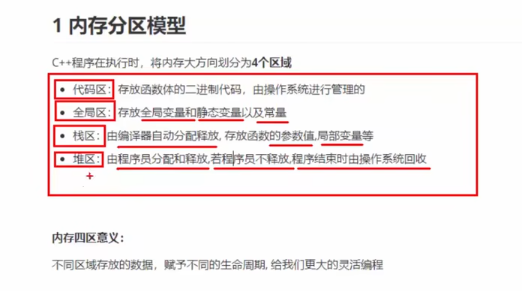
程序运行前
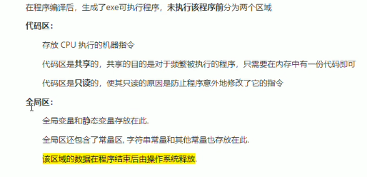
全局变量——main函数外的变量
静态变量 ——static 修饰的普通变量
全局常量——const 修饰全局变量
字符串常量——全局区
局部常量——const修饰的局部变量 不在全局区中
程序运行后
栈区数据注意事项
- 不要返回局部变量的地址
- 栈区的数据有编译器管理开辟和释放
堆区
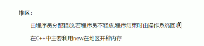
c++如何在堆区开辟数据
例：int *p = new int（10）;
int *p = new int[10] 返回首地址
如何删除：
利用 delete
//use set[]
delete [] set;
引用
C++ 引用 vs 指针
引用很容易与指针混淆，它们之间有三个主要的不同：
- 不存在空引用。
引用必须连接到一块合法的内存。 - 一旦引用被初始化为一个对象，就不能被指向到另一个对象。指针可以在任何时候指向到另一个对象。
- 引用必须在创建时被初始化。指针可以在任何时间被初始化
int i = 17； |
引用做函数参数
引用是能作为函数的返回值的
注意 不要返回局部变量的引用
函数的调用可以作为左值
如果函数的返回值是引用，这个函数调用可以作为左值
int &ref = test();//test的返回值是一个引用 |
引用的本质
本质：引用的本质在c++中是一个引用常量
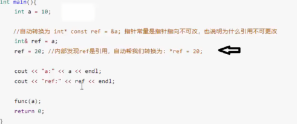
结论：c++推荐引用技术，语法方便，编译器会帮我们完成许多操作
常量引用
作用：修饰形参，防止误操作
引用必须引向一块合法的空间
int &ref = 10;//错误 |
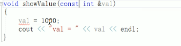
一般用于修饰函数中的形参 防止被错误的修改
函数提高
函数默认参数
int func(int a,int b = 20,int c = 30) |
- 如果某个位置已经有了默认参数，那么从这个位置往后，从左到右都必须有默认值
- 如果函数声明有默认参数，函数实现就不能有默认参数 声明和实现只能有一个有 或者说不能不同 防止二义性
函数占位参数
c++函数的形参列表可以有占位参数，用来占位，调用函数时必须填补该位置
void fun(int a,int){ |
函数重载
函数重载概述
作用：函数名称可以相同
函数重载满足条件：
- 同一个作用域
- 函数名称相同
- 函数参数不能完全相同 或者类型不同 或者个数不同 或者顺序不同
void func(int a){ |
PS：函数的返回值不能作为函数重载的条件
函数重载注意事项
引用作为重载的条件
void fun(int &a){ |
函数重载碰到默认参数
Attention
int func(int a,int b = 10){ |
类和对象
c++面向对象三大特征：封装、继承、多态
具有相同性质的对象，我们可以抽象为类，如人属于人类，车属于车类
封装
意义：
- 将属性和行为作为一个整体，表现生活中的事物
- 将属性和行为加以权限控制
语法
class Circle |
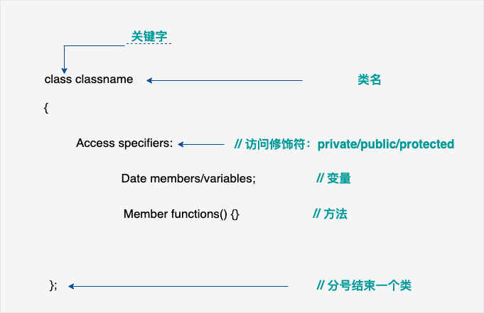
public 类内可以访问 类外可以访问
protected 类内可以访问 类外不可以访问 但是子类可以访问
private 类内可以访问 类外不可以访问 子类也不可以访问
struct 和 class的区别
- struct 默认权限是公共 也可以定义类
- class 默认权限是私有权限
成员属性设置为私有
- 可以自己控制读写权限
- 对于写可以检测数据的有效性
变量设置为私有，但是定义一定的方法去访问与调用成员
头文件与源文件的构造与实现
#ifndef CIRCLE_H #define CIRCLE_H //你的代码写在这里 #endif
下面举个最简单的例子来描述一下，咱就求个圆面积。
第1步，建立一个空工程（以在VS2003环境下为例）。
第2步，在头文件的文件夹里新建一个名为Circle.h的头文件，它的内容如下：
|
下一步，要给出Circle类的具体实现，因此，在源文件夹里新建一个Circle.cpp的文件，它的内容如下：
|
需要注意的是：开头处包含了Circle.h，事实上，只要此cpp文件用到的文件，都要包含进来！这个文件的名字其实不一定要叫Circle.cpp，但非常建议cpp文件与头文件相对应。
注意：在一个类中可以让另一个类成为它的成员
对象的初始化和清理
构造函数和析构函数
对象的初始化和清理是两个非常重要的安全问题
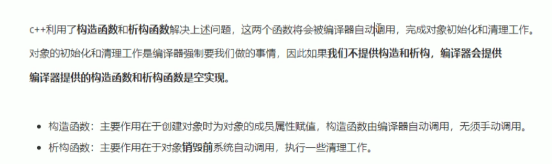
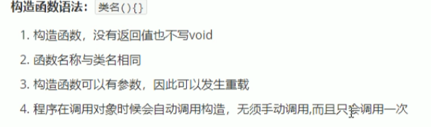
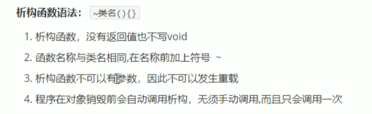
注意对象销毁即意味着其跳出自身的作用域
构造函数的分类与调用
分类方式
按参数分类： 有参构造和无参构造
按类型分类： 普通构造和拷贝构造
拷贝构造
Person(const Person &p) |
调用方式
括号法
显示法
隐式转换法
- ```c++ void test(){ Person p1;//默认构造函数调用 Person
p2(10);//括号法调用 Person p3(p2);//拷贝构造函数 Person p4 =
Person(10);//显示调用 Person(10);//匿名对象
当前行执行结束后，系统会立即回收掉匿名对象 Person p5 =
10;//===Person(10) 隐式转换法 }
> 注意：
>
> 调用默认构造函数的时候，不要加() 否则会被视作函数的声明
>
> 不要利用拷贝构造函数，初始化匿名对象 编译器会认为 Person（p3) === Person p3
### 拷贝构造函数的调用时机
- 使用一个已经创建的对象来初始化一个新对象
- 值传递的方式给函数参数传递值
- ```c++
void test1(Person p){
}//这里p是副本 参考c思想
void test(){
Person p;
test1(p);
}
- ```c++ void test(){ Person p1;//默认构造函数调用 Person
p2(10);//括号法调用 Person p3(p2);//拷贝构造函数 Person p4 =
Person(10);//显示调用 Person(10);//匿名对象
当前行执行结束后，系统会立即回收掉匿名对象 Person p5 =
10;//===Person(10) 隐式转换法 }
以值方式返回局部对象
Person test(){ |
构造函数的调用规则
默认情况下，c++编译器会添加三个函数：
- 默认构造函数，空
- 默认析构函数，空
- 默认拷贝函数，对属性进行值拷贝
构造函数调用规则
如果用户定义有参构造和拿书，c++不会再提供无参构造函数，但是会提供默认拷贝函数
若是还想使用默认构造函数，则需要自己再定义
如果用户定义拷贝函数，则c++不会再提供其他构造函数
其他需要的什么构造都需要自己提供
深拷贝与浅拷贝
析构函数通常是用来将堆区数据做释放操作
Class Person(){ |
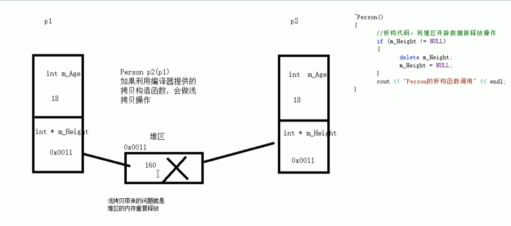
深拷贝就是自己再堆上重新申请一段空间，赋上相同的值。（需要自己重新实现拷贝构造函数）
初始化列表
例
Class Person{ |
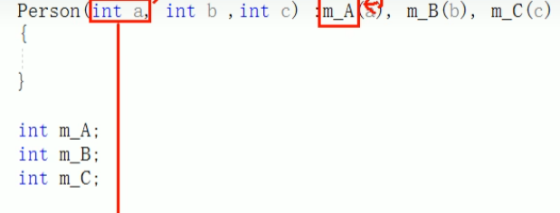
类对象成为类成员
类中成员成为另一个类的对象，称该成员为类成员